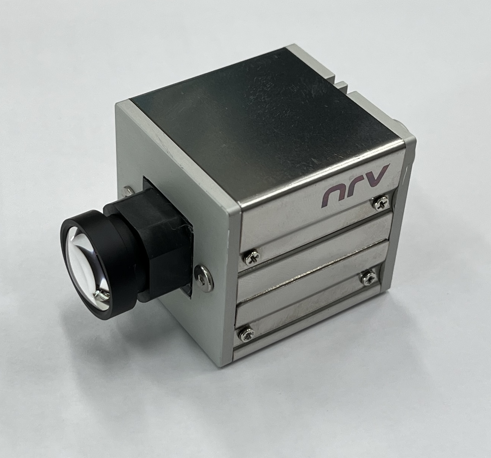
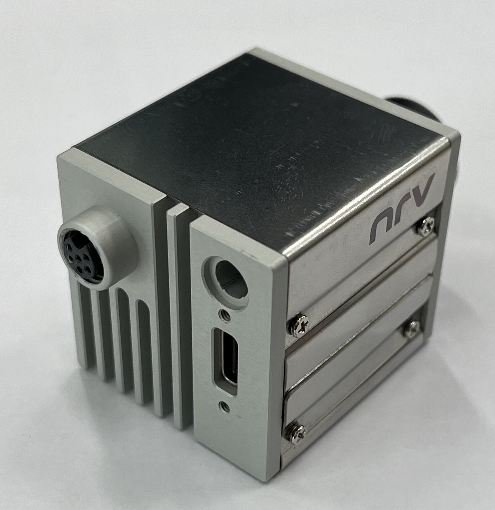
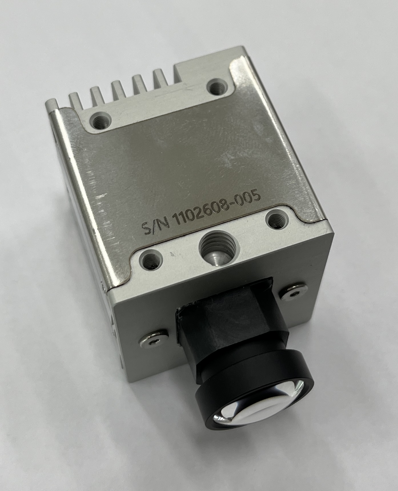
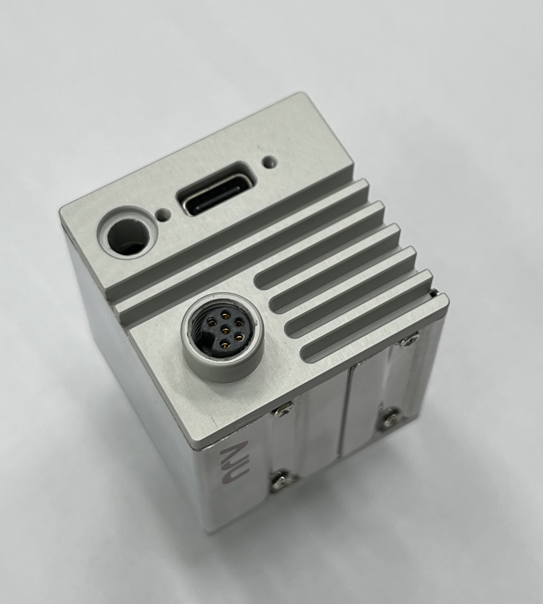

신규 카메라 모듈 제품 케이스 제작
신규 Delta10 카메라의 외장 케이스 제작과 조립 과정에 참여한 기록입니다. 실제 카메라 모듈의 외형을 기준으로 비기능성 3D 데모 모델을 만들고, 3D 프린팅 시제품으로 렌즈·단자·체결부의 위치와 조립성을 확인했습니다. 이후 실제 FX10 PCB가 들어갈 수 있는지 검토하고, 제작 담당자들과 구조와 수정사항에 대한 의견을 주고받았습니다. 이 과정을 거쳐 금속 케이스가 제작되었으며, 실제 PCB와 렌즈 모듈까지 조립한 카메라 완성품으로 이어졌습니다.

1. 3D 데모 모델로 시작한 외장 설계
대표 이미지의 모델은 실제 카메라 모듈의 외형을 참고해 제가 직접 만든 3D 데모 모델입니다. 보드의 외곽 크기와 두께를 기준으로 잡고, 높게 돌출되는 주요 부품이 케이스 안에서 간섭하지 않도록 여유 공간을 따로 반영했습니다. 외부로 나오는 단자는 케이스 개구부와 맞아야 하므로, 위치와 돌출 형상을 모델에서 정확히 표시했습니다.
이렇게 만든 모델은 회로 정보를 드러내지 않고도 렌즈, 기판, 돌출부와 단자의 기구적 관계를 검토할 수 있는 기준이 됐습니다. 이후 케이스 형상을 수정할 때도 조립 간섭과 단자 접근성을 빠르게 확인하는 데 사용했습니다.
2. 설계 검토와 조립 방향 논의
3D 모델을 만든 뒤에는 선임 분들과 제품 케이스의 형태와 조립 방식을 논의했습니다. 체결 위치와 조립 순서, 외부 단자에 접근하는 방식, 실제 제품에서 필요한 외관을 함께 검토하면서 케이스가 갖춰야 할 조건을 구체화했습니다. 이 과정에서 나온 의견을 바탕으로 시제품에서 먼저 확인할 치수와 간섭 조건을 정리했습니다.
3. 3D 프린팅 시제품과 조립 확인
검토한 형상은 먼저 3D 프린터로 출력해 시제품으로 조립해 보았습니다. 이 단계에서는 렌즈와 단자 위치, 체결부와 외장 사이의 치수가 맞는지, 실제 조립 과정에서 간섭이 생기지 않는지를 확인했습니다.
 렌즈와 단자 개구부, 전면 발열판 형상을 확인한 조립 상태
렌즈와 단자 개구부, 전면 발열판 형상을 확인한 조립 상태
 외장 덮개와 체결 위치를 확인한 시제품 조립 상태
외장 덮개와 체결 위치를 확인한 시제품 조립 상태
조립 확인과 함께 후면의 고발열 영역도 고려했습니다. 제작 담당자들과 열을 분산할 수 있는 외장 구조를 논의했고, 해당 부분에는 발열판 형상이 반영되었습니다. 위 사진은 금속 케이스 제작에 앞서 형상과 치수를 확인했던 시제품입니다. 이 단계에서 확인한 내용은 조립 조건이며, 실제 방열 성능을 측정한 결과는 이 글에 포함하지 않습니다.
4. 금속 케이스 제작 완료
3D 프린팅 시제품에서 확인한 형상과 조립 조건을 바탕으로 최종 금속 케이스가 제작되었습니다. 실제 FX10 PCB와 카메라 모듈이 내부에 정상적으로 장착되는지 확인하고, 렌즈 위치와 외부 연결부, 체결 위치가 케이스와 간섭하지 않는지 실제 부품을 기준으로 검토했습니다.
금속 가공과 세부 기구 설계는 제작 담당자들이 맡았으며, 저는 초기 외형 모델링과 PCB 호환성 검토, 조립 조건 확인에 참여했습니다. 제작 중에도 담당자 및 선임 분들과 의견을 주고받으며 수정사항과 조립 시 확인할 부분을 함께 검토했습니다. 최종적으로 실제 PCB, 렌즈 모듈과 금속 하우징이 결합된 카메라가 완성되었고, 신규 Delta10 카메라는 아래와 같은 형태로 출시됩니다.




5. 협업을 통해 실제 결과물까지 완성한 경험
초기 3D 모델은 제가 외형을 확인하는 도구이면서, 제작 담당자들과 조립 조건을 공유하는 자료이기도 했습니다. 실제 FX10 PCB와 모델을 기준으로 케이스에 들어가는 부품의 위치를 함께 살펴보고, 조립 과정에서 간섭이 생길 수 있는 부분과 수정이 필요한 지점을 논의했습니다. 모델에서 검토한 조건을 시제품과 실제 부품에서도 다시 확인하면서 다음 제작 단계로 이어갔습니다.
제가 맡은 범위는 전체 제작 과정의 일부였지만, 초기 모델과 검토 내용이 다른 담당자의 기구 설계·가공 작업에 어떻게 반영되는지 확인할 수 있었습니다. 제작 담당자들과 의견을 주고받으며 제 작업이 다음 단계의 조립에 필요한 조건을 담고 있는지 살폈고, 실제 PCB와 외장 구조가 하나의 카메라로 조립되는 과정까지 참여했습니다.
이 과정에서 제품 케이스가 한 번의 모델링으로 완성되는 것이 아니라, 초기 외형 모델을 검토 자료로 사용하고 시제품에서 치수와 간섭을 확인한 뒤 담당자들과 수정 내용을 다시 맞추는 흐름을 배웠습니다. 또한 제가 확인한 조립 조건을 다음 제작 단계에서 활용할 수 있도록 구체적으로 전달해야 금속 가공과 최종 조립까지 자연스럽게 이어질 수 있다는 점도 알게 됐습니다.
이 페이지는 초기 외형 모델링과 PCB 호환성 검토, 제작 협의부터 최종 금속 케이스 조립까지 참여한 과정을 정리한 제품 케이스 제작 및 조립 기록입니다. 실제 회로 및 PCB 설계 정보는 포함하지 않습니다.